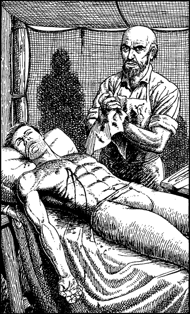

289
You follow Cearmaine and the young lieutenant out of the Canatarium and along a crowded avenue towards a tented encampment in the city’s main park. Here, under a canvas awning, the captain finds his mortally wounded son being attended to by an army physician.
‘Will he pull through?’ asks Cearmaine, of the physician whose white surgical apron is stained deep crimson with the blood of all those he has attempted to save this day. The weary man does not answer—he simply shakes his head and leaves to attend yet another poor wretch who is crying out for him to end his suffering.

Cearmaine’s son has a deep chest wound which, on closer inspection, you determine was made by a poisoned arrow. The physician has removed the shaft but the poison has long since entered the young man’s bloodstream. His life is fast ebbing away and you sense there is very little you can do to save him.
If you possess Deliverance and have reached the rank of Sun Knight or higher, turn to 164.
If you do not possess this skill, or if you have yet to attain this level of Kai Mastery, turn to 13.